PyCharm
PyCharm es el IDE más popular utilizado para Python. Este capítulo le dará una introducción a PyCharm y explicará sus características, entre las que destacan:
- Asistencia inteligente a Python. Proporciona una finalización e inspección de código inteligente, así como indicaciones de errores y refactorización de código automática.
- Depuración avanzada.
- Visualización de Git en Editor.
- Desarrollo multitecnología. Compatible con JavaScript, SQL y HTML/CSS entre otros.
Instalación
El IDE PyCharm fue creado por la compañía JetBrains, y está disponible para los sistemas operativos Windows, Mac y Linux. La Community Edition es gratuita y contiene todas las funcionalidades necesarias para un uso principiante - intermedio, que serán más que suficientes. La instalación con el asistente no es complicada y requiere 840 MB en el sistema de archivos.
ENLACE PYCHARM
El siguiente enlace le redirige a la página oficial de JetBrains para la descarga de PyCharm Community Edition.
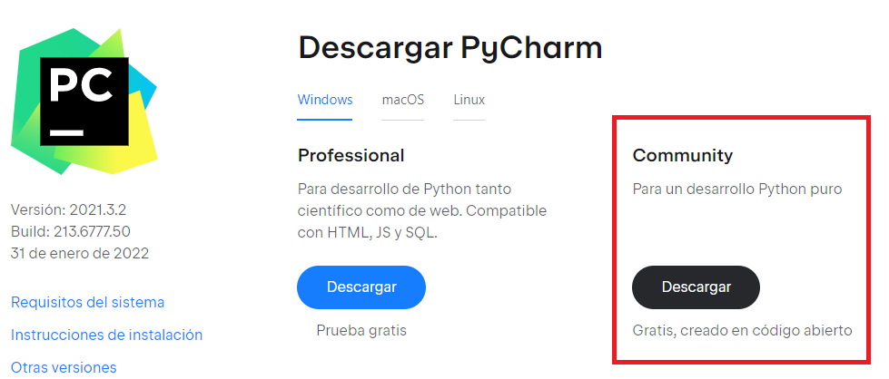
Nuevo Proyecto
Una vez instalado, al iniciar el programa aparece una ventana de bienvenida que ofrece la opción de crear un nuevo proyecto.
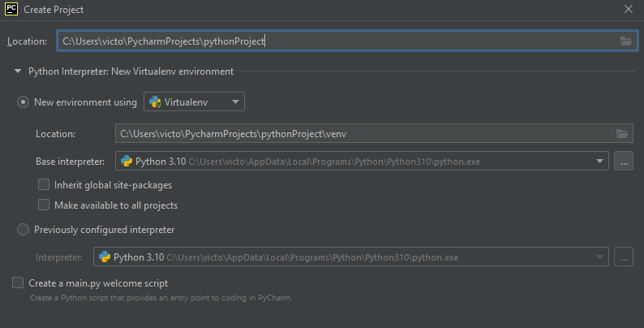
- En la parte superior le asigna un nombre y ubicación al nuevo proyecto.
- Inicialmente, utilice la versión virtual (virutalenv). En Base Interpreter, seleccione la última versión de Python que tenga disponible para asociarla con el proyecto.
- Como será su primer proyecto, seleccione la opción Create a main.py welcome script, un script de ejemplo que le será de ayuda.
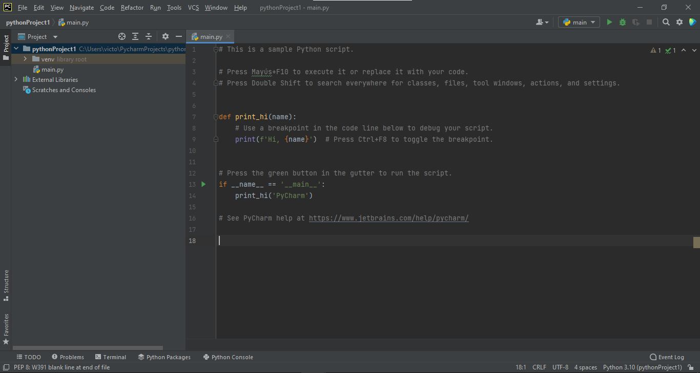
Herramientas
Como se puede observar en la imagen anterior, la interfaz se compone de un diseño básico, formado principalmente por los siguientes elementos:
- EDITOR.La mayor parte de la interfaz estará ocupada por el archivo que desee editar, en el caso de la imagen se observa el código del archivo main.py.
- PROYECTO. A la izquierda de la pantalla, encontrará los directorios y archivos que componen el proyecto que acaba de crear. Esta ventana es realmente útil, ya que, a parte de poder organizar de forma fácil los archivos que crea, puede realizar diferentes acciones haciendo click derecho en el archivo.
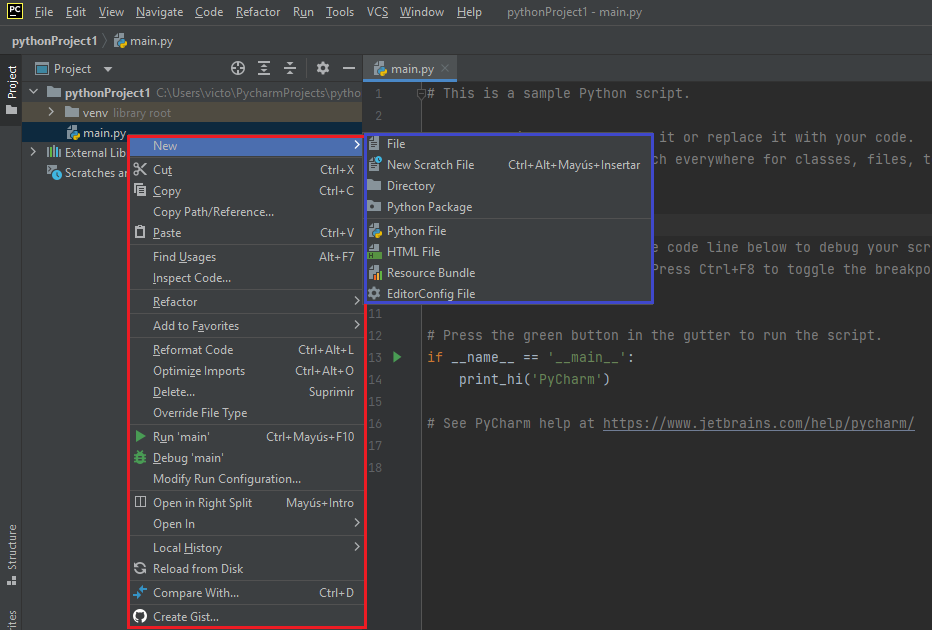
Lista desplegable
Destaca la posibilidad de crear, mover, ejecutar (run), depurar (debug) y eliminar archivos. Observe además que en este caso el proyecto contiene un directorio (venv), que contiene un único archivo (main.py).
- BARRA DE MENÚS. Situada en la parte superior de la interfaz, los diferentes menús que la componen ofrecen una amplia gama de herramientas.
- File. Permite crear, abrir, guardar y cerrar proyectos o archivos de diferente tipo, modificar las opciones del IDE, activar el modo ahorro de energía o cambiar las propiedades del archivo entre otras opciones.

- Edit. Incluye las opciones generales de copiar, cortar, pegar, deshacer, buscar, limpiar, etc. Destacan además las opciones de unir, ordenar o duplicar las líneas de código seleccionadas o todo el código.
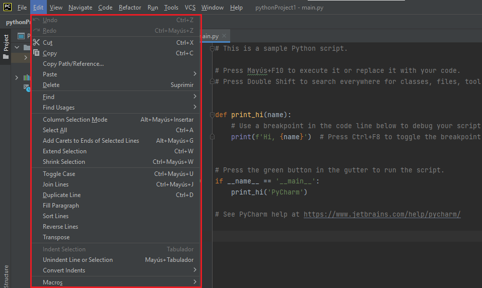
- View. Orientado principalmente a la configuración del entorno, pudiendo seleccionar los elementos que desea que se muestren u oculten en su interfaz. Además es muy útil poder ver los archivos recientes, así como un historial de las últimas modificaciones en esos archivos.
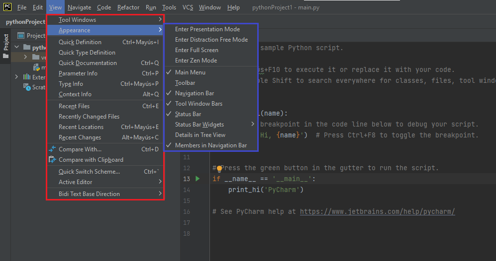
- Navigate. Distintas opciones de navegación en el código, como la navegación a una línea de código específica, buscar un elemento en el proyecto, encontrar una ruta de archivo...
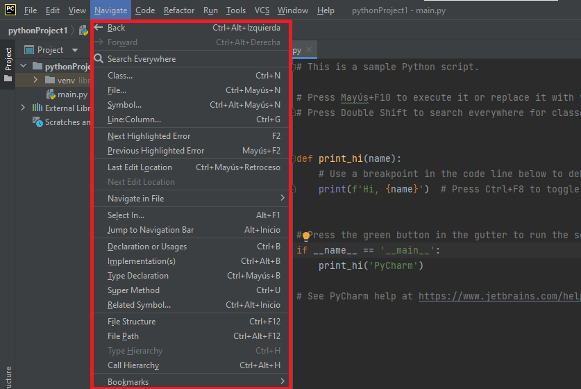
- Code. Opciones dirigidas principalmente a la escritura/lectura de código, como la inspección y análisis del código, o mover líneas, elementos y enunciados.
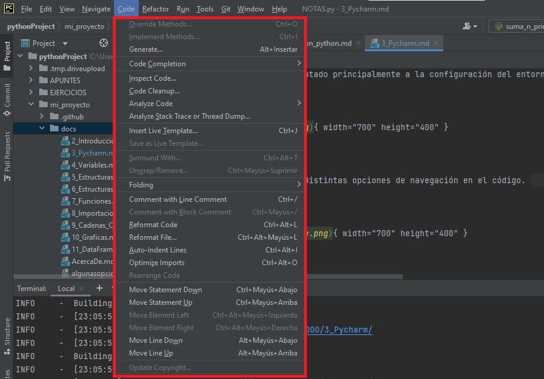
-
Refactor. La refactorización de código tiene el objetivo de que este pueda leerse de la manera más fácil posible, y que una persona que no haya trabajado en su escritura, pueda captar la lógica de este. Por tanto, esto mejora la legilibilidad y reduce la complejidad, sin realizar cambios en su comportamiento.
Además, incluye las opciones de mover/copiar archivos, la opción Pull members up, que ayuda a eliminar el código duplicado; y la opción Pull members down, que ayuda a mejorar la coherencia del código.
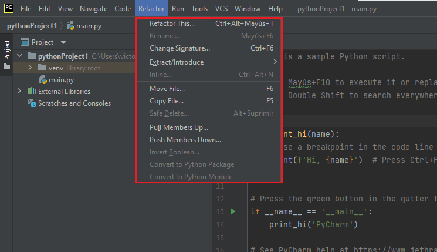
- Run. Sin duda, una de las ventanas que más se emplearán. Desde esta, se pueden realizar tres acciones fundamentales:
- RUN. Opción para ejecutar el programa que se está editando. En el entorno PyCharm encontrará otras formas de realizar esta acción.
- DEBUG. Diseñado para programación, ayuda a agilizar o depurar código, localizando errores o elementos innecesarios.
- BREAKPOINTS. Realiza un punto de parada donde se haya situado el punto al correr el código, de forma que sea posible la revisión. Estos puntos de parada se pueden establecer clickando a la derecha del número de línea en la que se desee poner.
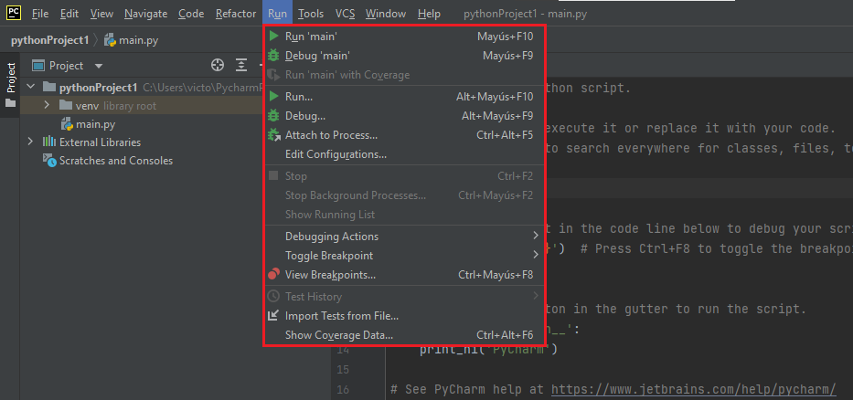
- Tools. Puede encontrar distintas opciones relacionadas con la gestión de tareas y contextos e iniciar la consola interactiva de Python.
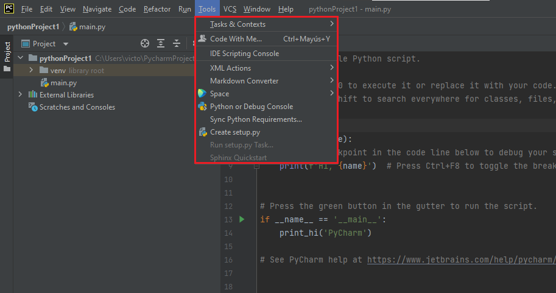
- VCS. Antes de explicar qué permite esta ventana, hay que entender una serie de conceptos:
- ¿Qué es Git? ¿Y GitHub?. GitHub es un servicio basado en la nube que aloja un sistema de control de versiones (VCS) llamado Git. Este permite a los desarrolladores colaborar y realizar cambios en proyectos compartidos, a la vez que mantienen un seguimiento detallado de su progreso. Todos los usuarios de GitHub pueden rastrear y gestionar los cambios que se realizan en el código fuente en tiempo real, a la vez que tienen acceso a todas las demás funciones de Git.
- ¿Es importante que conozca GitHub?. Como bioquímico interesado en la bioinformática, es muy importante que se familiarice con esta plataforma, ya que hay miles de repositorios disponibles con programas que le pueden resultar útiles, gracias a una gran red de bioinformáticos que comparten sus trabajos y se ayudan mutuamente.

Entendido esto, ya solo queda decir que en esta ventana encontraremos todo lo necesario para vincular nuestro proyecto a GitHub. Podremos elegir si hacer este repositorio público o privado.
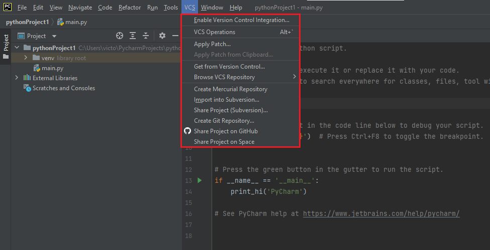
GitHub
En el siguiente enlace puede encontrar toda la información acerca de cómo compartir su proyecto en GitHub.
- Window. En esta ventana puede guardar como predeterminada la disposición actual de ventanas o restaurar la disposición original, mostrar el submenú de comandos relacionados con las pestañas del editor o con la realización de tareas en segundo plano, o cambiar entre los proyectos que tenga abiertos.
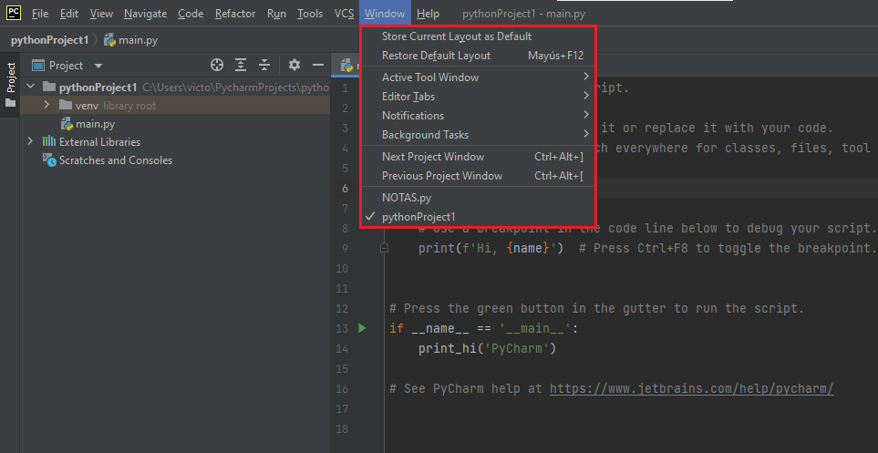
- Help. Esta es una de las ventanas con más opciones disponibles, entre las que destacan poder obtener más información sobre PyCharm EduTools, abrir en archivo PDF una lista de accesos directos disponibles, sugerencias del día, últimas novedades de PyCharm o buscar las últimas actualizaciones disponibles.
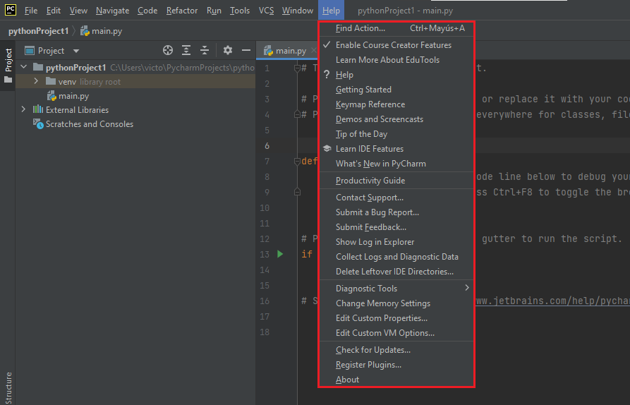
- VENTANAS INFERIORES. En la zona inferior de la pantalla, puede encontrar una serie de paneles que serán muy importantes durante el uso de PyCharm. Estas herramientas las puede encontrar también en View > Tool Windows .
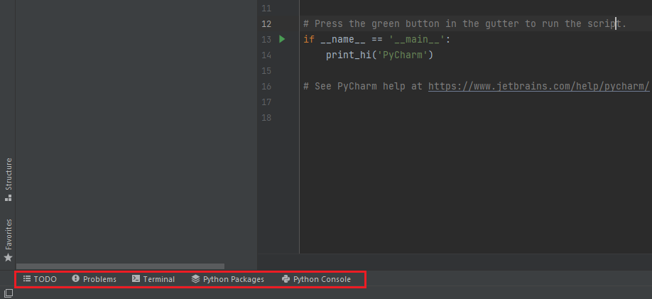
-
TODO. La mayoría de los programadores ponen comentarios TODO en su código, para rastrear los problemas que ven, las ideas que tienen, o algo que queda por hacer, como un carpintero que construye una casa y escribe una medida en el marco.
En esta ventana podremos seleccionar si deseamos ver todos los comentarios TODO del proyecto o solo los del archivo actual. Además podremos navegar entre los distintos elementos TODO con las opciones de la izquierda: seleccionar el anterior/siguiente TODO, filtrar los distintos elementos o seleccionar cómo agrupar estos items TODO.
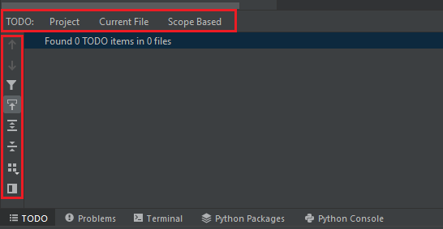
TODO
Para escribir en su código un comentario TODO, simplemente tendrá que escribir #todo seguido del comentario.
-
Problems. Esta ventana muestra los problemas que PyCharm detecta en su proyecto. La pestaña Current File enumera los problemas de código encontrados en el archivo actual, donde puede seleccionarlos para saltar directamente a la línea donde se encuentra; y la pestaña Project Errors mostrará todo el conjunto de errores en su proyecto.
Tenga en cuenta que en la mayoría de las ocasiones, el propio IDE le va a proporcionar posibles soluciones al problema detectado.
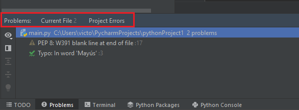
-
Terminal. PyCharm incluye un emulador de terminal integrado para trabajar con el shell de línea de comandos desde dentro del IDE. Como se puede observar, en este caso el emulador se ejecuta con Windows PowerShell.
El terminal será fundamental para ejecutar comandos de Git, cambiar permisos de archivos o realizar otras tareas de líneas de comandos desde el propio entorno.
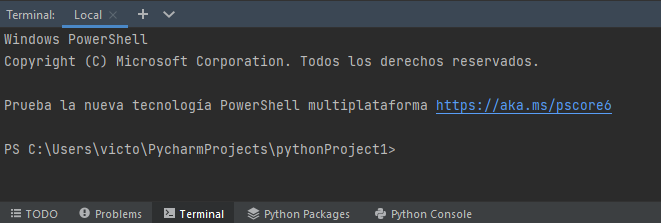
-
Python Packages. Pycharm admite la instalación, desinstalación y actualización de paquetes de Python. De forma predeterminada, Pycharm hace uso del administrador de paquetes pip para lo mismo.
Esto también se puede realizar desde: File > Settings > Project > python interpreter.
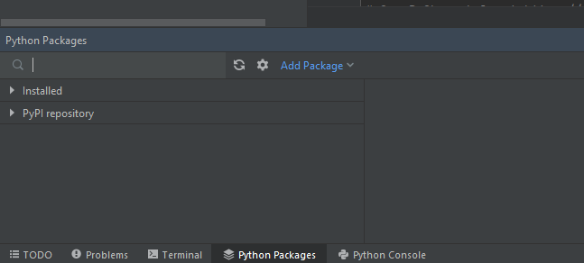
pip
Pip (Package Installer for Python) es un sistema de gestión de paquetes utilizado para instalar y administrar paquetes en Python. Una ventaja importante de pip es la facilidad de su interfaz de línea de comandos, el cual permite instalar paquetes de software de Python fácilmente desde solo una orden:
Por tanto, como PyCharm utiliza el administrador de paquetes pip, simplifica en gran medida el manejo de paquetes. Puede utilizar el navegador para buscar e instalar paquetes genéricos, o bien instalar paquetes específicos:
- Importándolos desde tu propio ordenador (utilizando la ruta al directorio del paquete o archivo).
- Desde el Sistema de Control de Versiones (utilizando ruta a un repositorio de Git).
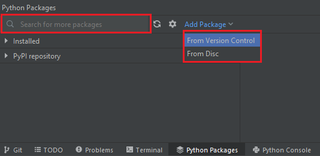
- Python Console. PyCharm incluye en la interfaz una consola de Python propia, siendo una forma rápida de ejecutar comandos o probar código sin crear un archivo.